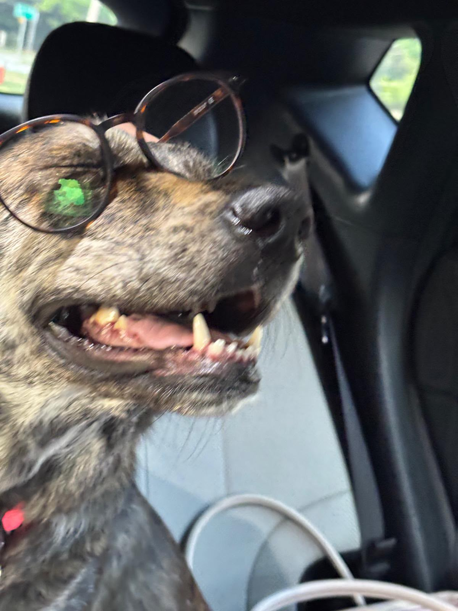

About Me
Interests & Hobbies
- Playing guitar (electric/acoustic)
- Walking/playing with my dog
- Playing video games / watching movies / spending time with family
My Top Goals
- Get into Tri-C and do the 2+2 Program
- Get multiple certifications in programming/cybersecurity
- Get into the senior work program as early as possible
Skills & Tools
- Certifications
- Microsoft Office Specialist (MS Word / Powerpoint)
- IC3 Digital Literacy (GS6 Level 1-3)
- Beginner Programming Experience
- Java Programs
- HTML & CSS
